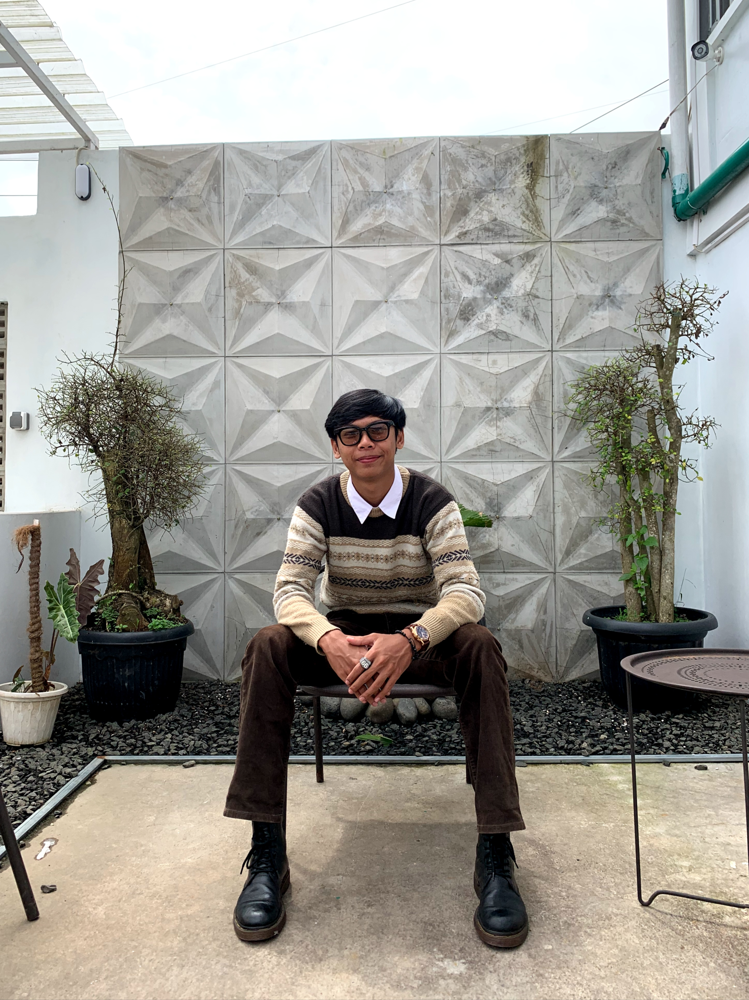
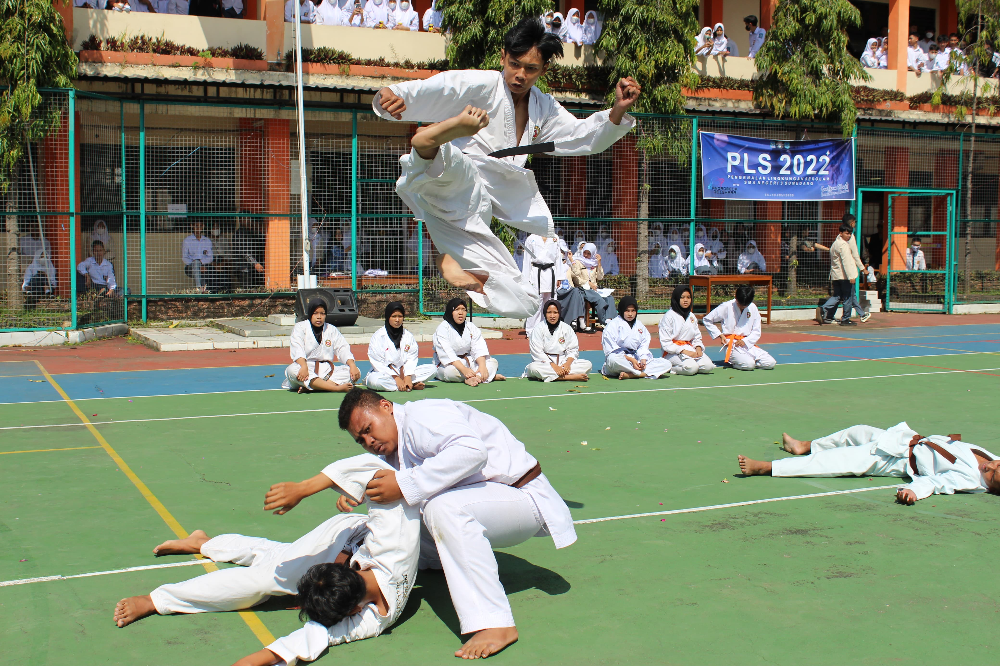
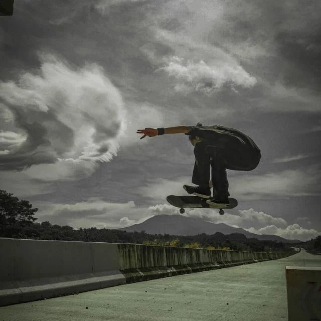
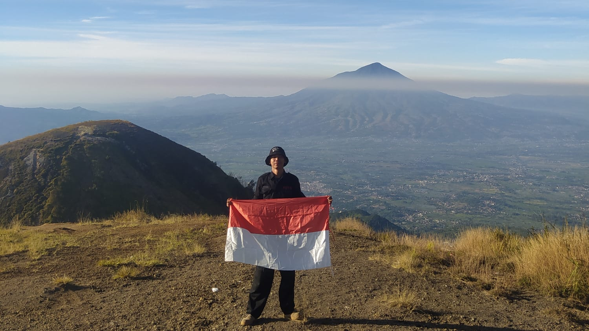
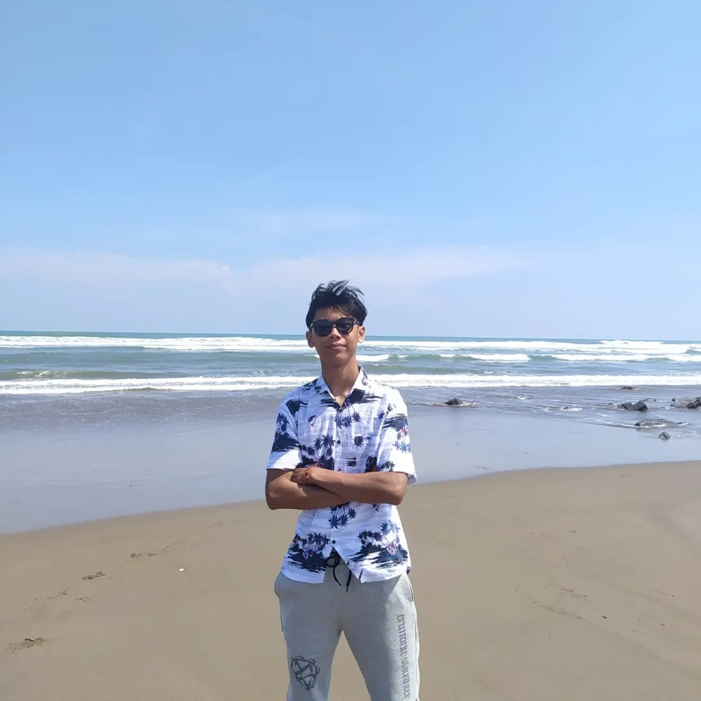
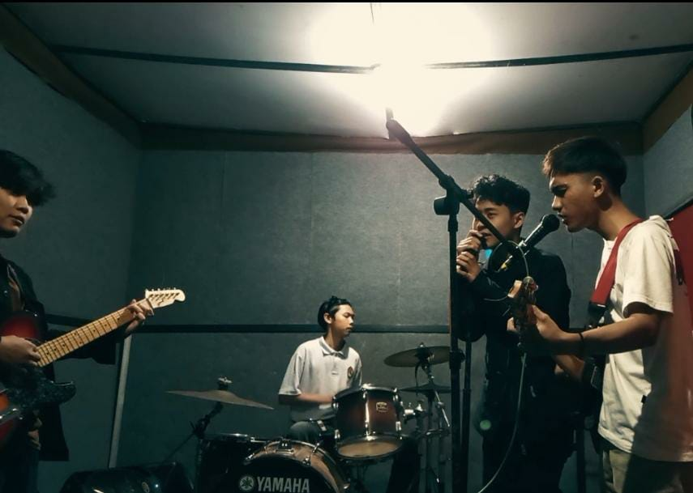
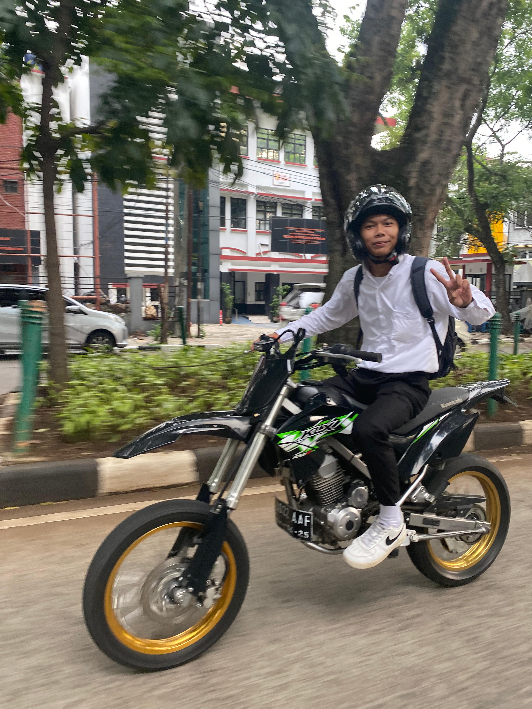
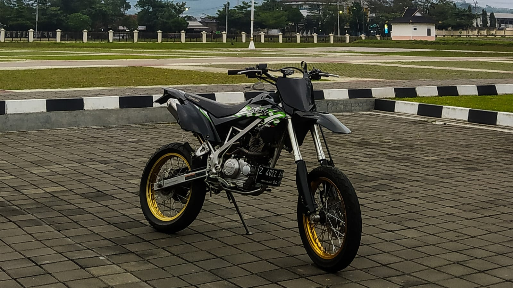

Rizal Ahmad Fauzi, itulah nama saya.
Lahir di sebuah Kota kecil yang ada di Jawa Barat.
Yaitu Kota Sumedang, pada hari minggu setelah magrib tanggal 17 Oktober 2004.

KARATE
Foto ini diambil ketika saya sedang menampilkan demo EKSKUL di salah satu Sekolah Menengah Atas favorit yang ada di Kota Sumedang.
Pada saat itu saya masih berstatus pelajar di Sekolah tersebut.

SKATEBOARD
Foto ini diambil ketika saya sedang bermain papan skate di Jalan TOL CISUMDAWU sebelum TOL ini diresmikan dan dioprasionalkan.

PUNCAK GUNUNG
Foto ini diambil ketika saya berada di Puncak Gunung Guntur pada saat merayakan Agustusan di tahun 2023.

TEPI PANTAI
Foto ini diambil ketika saya berada di Pantai Selatan, yaitu Pantai Cipatujah.

BAND TROK
Foto ini diambil ketika saya sedang berlatih di suatu studio musik bersama teman - teman.

MOTORAN
Foto ini diambil ketika saya sedang berkendara di Kota Bandung.

MY PARTNER
Dia lah yang selalu menghibur dan menemani saya kemanapun saya pergi, dalam keadaan apapun.
